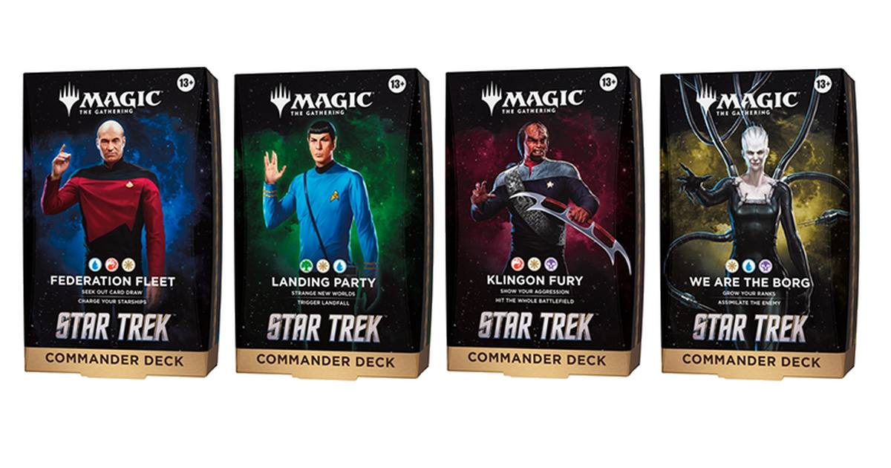

Star Trek Commander decks hit shelves today
Magic: The Gathering's four Star Trek Commander decks arrive today at $74.99 each — Picard, Spock, Worf and the Borg Queen, each leading a ready-to-play 100-card deck with 32 brand-new cards.

Disclosure: this post contains affiliate links. I earn a commission on qualifying purchases.
The launch
Magic: The Gathering's Star Trek crossover is on shelves today. Four Commander decks arrive November 13, 2026, at $74.99 each, each one ready to play straight out of the box with a foil borderless commander on top.
Every deck is a full 100-card build, and each one carries 32 cards that are entirely new to Magic — the rest is reprints chosen to fit the deck's game plan. Wizards of the Coast revealed the full decklists October 27–29, after a November 6–12 prerelease week at local game stores and a November 10 digital rollout on MTG Arena.
This is the first full-scale Universes Beyond crossover with Star Trek, and it lands in the franchise's 60th anniversary year. The main set is available alongside the decks, from $6.99 Play Boosters up to Collector Boosters, with the Commander decks as the on-ramp for anyone who wants to sit down and play tonight.
The four decks
Each deck is built around a different corner of the Star Trek universe, with its own colors and its own way to win.
Federation Fleet: Jean-Luc Picard; White, blue, red; Draw cards and power up starships
Landing Party: Spock; Green, white, blue; Play lands — especially differently named ones
Klingon Fury: Worf; Red, white, black; Attack every opponent at once
We Are the Borg: The Borg Queen; White, blue, black; Make Borg tokens and steal creatures
Federation Fleet is the Jeskai starship deck, built around Picard and the fleet — card draw feeding bigger ships. Landing Party is the Bant lands deck, with Spock rewarding you for controlling a wide spread of differently named lands through the Strange New Worlds mechanic. Klingon Fury is the Mardu aggro deck, pure Worf: hit the whole table at once. We Are the Borg is the Esper inevitability deck, turning the Assimilate mechanic into a slow takeover as your opponents' creatures become Borg drones.
What's in the box
Beyond the 100 cards and the foil borderless face commander, each deck comes with 10 double-sided token cards, a deck box that holds 100 sleeved cards, a strategy insert and a reference card. The Commander decks are legal in eternal formats like Commander, Legacy and Vintage.
For collectors who want the full treatment, all four decks also come in a Collector's Edition at $159.99 each, with every card in surge foil.
One thing to check before you head out
Wizards has warned that Star Trek Commander decks in North America may arrive after the November 13 release date, thanks to shipping delays on some products. If your local store doesn't have them on the shelf today, keep your preorder and ask the store for its expected date — they may land a few days late rather than not at all.
Commander Party events run November 20–26, with a second wave December 11–17, so stores have organized-play windows stretching into the holiday season either way.
Watch
Source: Magic: The Gathering | Star Trek Debut — Magic: The Gathering. The official debut video walks through the set's mechanics, card previews, booster treatments and the four Commander decks ahead of release.
Sources
• Magic: The Gathering | Star Trek Commander Decklists — Wizards of the Coast
• MTG Star Trek Commander Decks: All 4 + Prices (Nov 2026) — Nerdsnack
• 60 Years of Star Trek, Now in a Booster Pack — Tech Times
• Star Trek Commander — MTG Wiki
• TCG Holiday Gift Guide 2026 — The Cardboard Chronicles